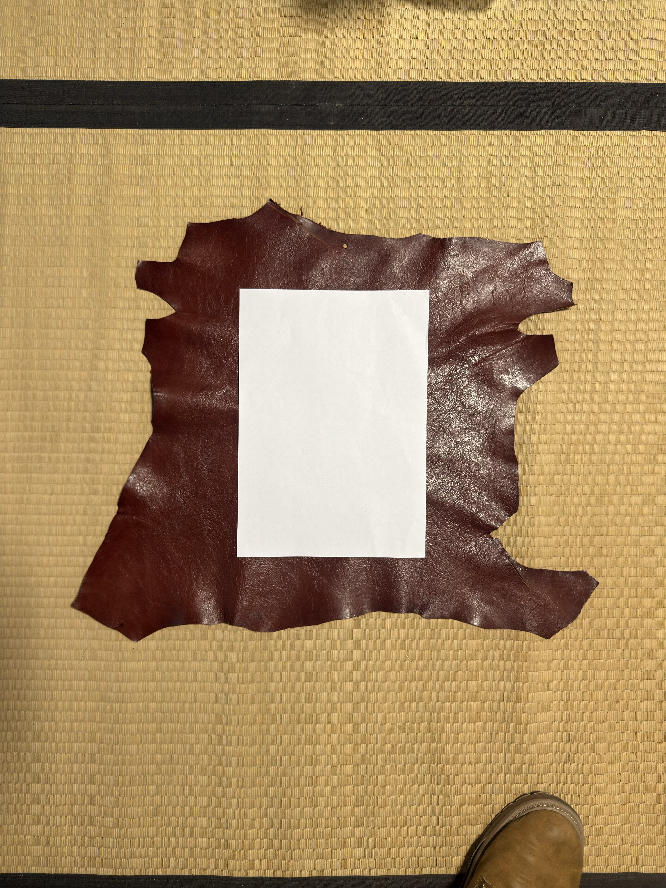
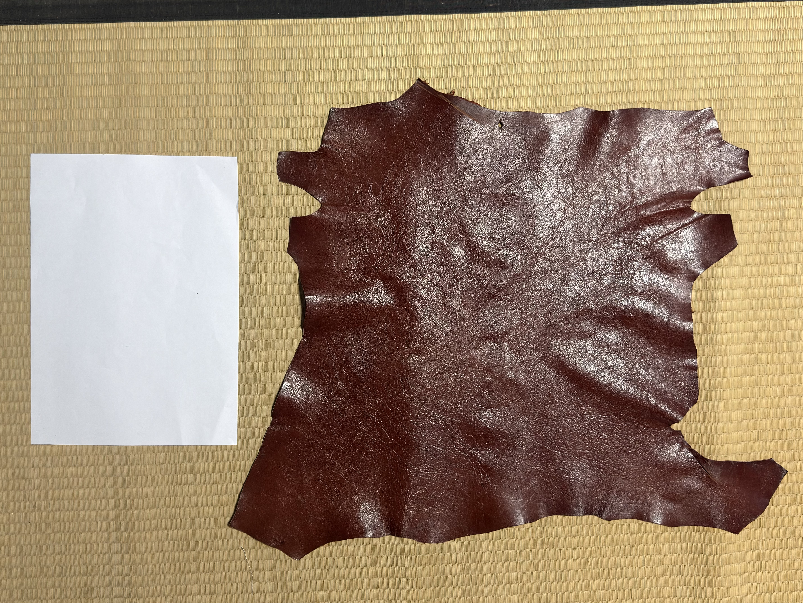
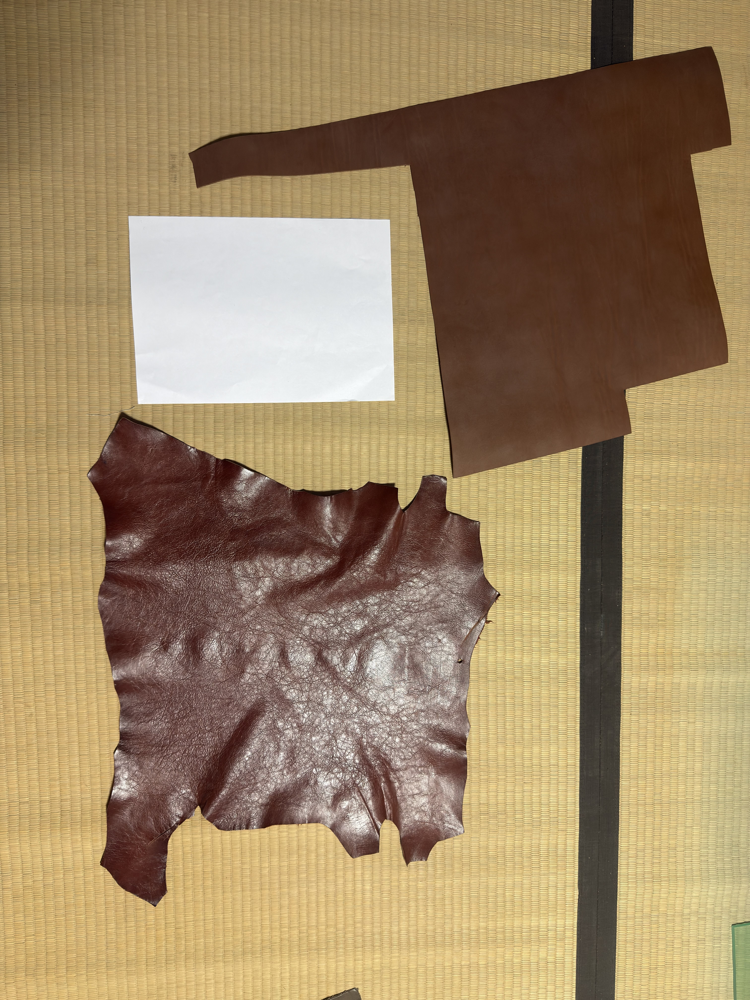
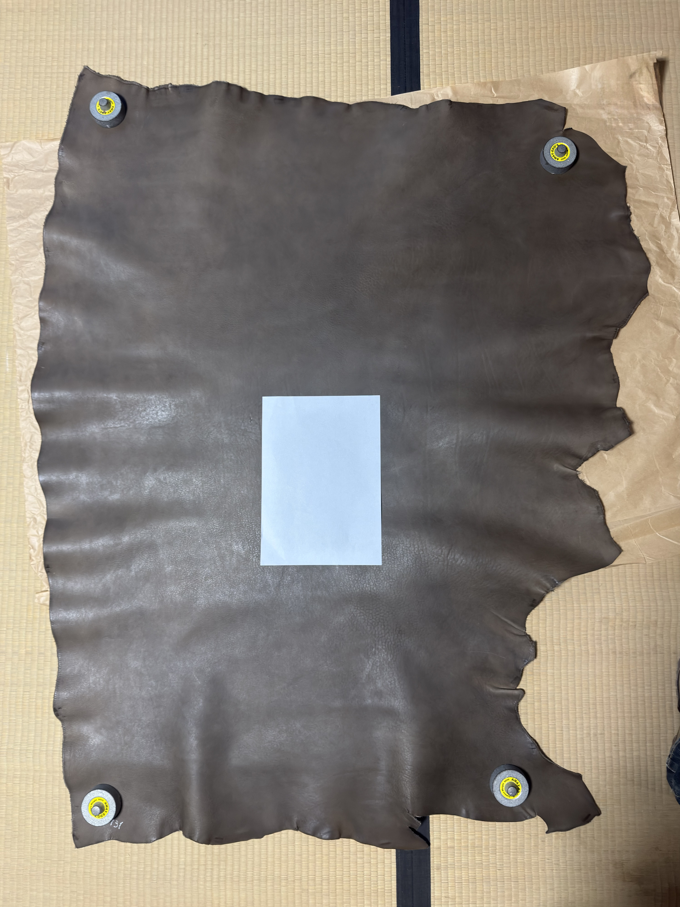
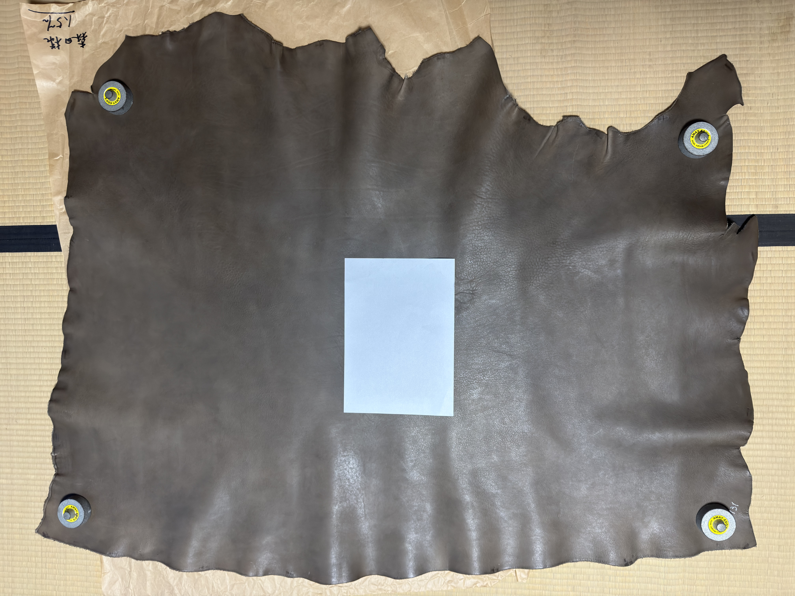
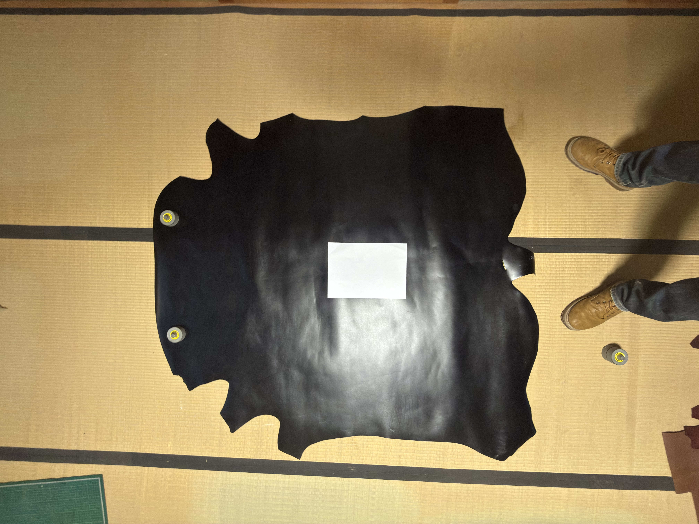
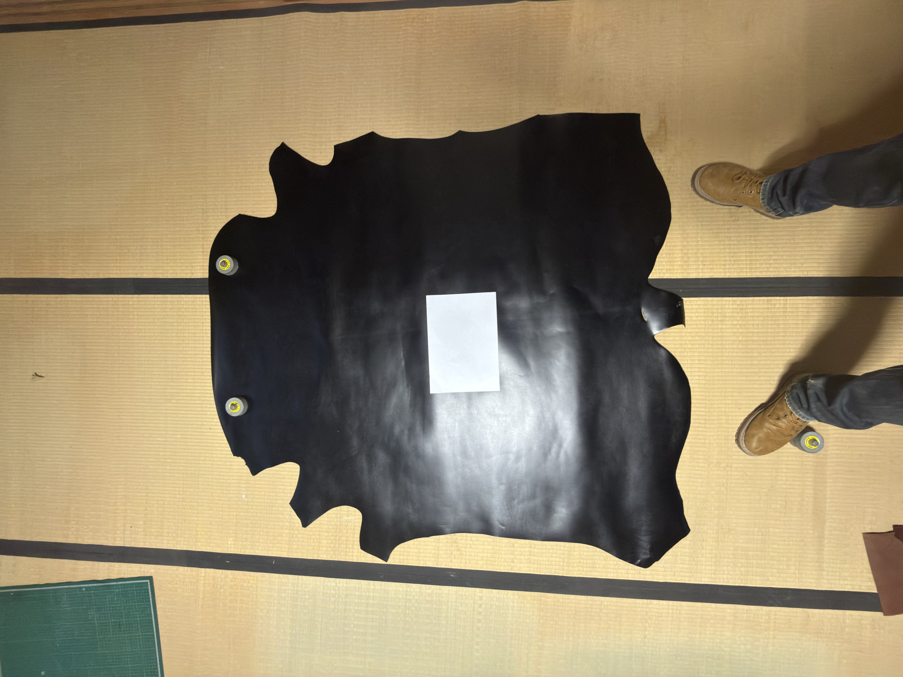

Sample 01

sanhachi leather / サンハチレザー
Leather Measurement Helper (LMH) / レザー面積測る君
This page provides reference photos for reviewing Leather Measurement Helper (LMH). These photos do not guarantee measurement accuracy.
このページは、「レザー面積測る君」(Leather Measurement Helper / LMH)の審査用の参考写真です。測定精度を保証する資料ではありません。
Except for the leather scraps in Sample 3 (approximately 19 dm²), the stated areas are the areas indicated at the time of purchase. The leather used has not been cut down since purchase. However, these are values indicated at purchase and are not independently verified values. The area of the scraps is approximate.
* "dm²" means square decimeters. In Japan, this unit is called "deshi"; 1 dm² is 10 cm × 10 cm (100 cm²).
サンプル3のハギレ(およそ19デシ)を除き、記載した面積は購入時に示されていた面積です。購入後に切り取るなどして減らしていない革を使用しています。ただし、これらは購入時に示された値であり、第三者が検証した値であることを示すものではありません。ハギレの面積はおおよその値です。
※「デシ」は dm²(平方デシメートル)のことで、1デシは 10cm × 10cm(100cm²)です。
The app estimates area by treating the photographed subject as a flat surface. Because it cannot recognize the surface area along wrinkles or uneven contours, the displayed area tends to be smaller than the actual leather area. However, in many cases this is not so. Other errors from shooting conditions and region selection also affect the result, so the error does not always go in one direction.
本アプリは、写真を平らな面として扱って面積を推定します。革のシワや凹凸に沿った表面積は認識できないため、実物より小さい値が表示される傾向があります。ただし、そうならない場合も多くあります。撮影条件や範囲の指定による誤差もあるため、一定の方向にずれるとは限りません。
The automatic selection of the four corners of the reference paper is often offset from the actual corners. Before measuring, we recommend zooming in to check each corner and correcting it manually if necessary.
基準紙の四隅の自動選択は、実際の角からずれることが多くあります。測定前に、各隅を拡大して位置を確認し、必要に応じて手動で修正することをおすすめします。
Samples 6 and 7 were taken with an ultra-wide-angle lens. Lens distortion may cause substantial errors.
サンプル6・7は超広角レンズで撮影しています。レンズの歪みにより、結果が大きくずれることがあります。
Displayed areas are reference estimates only. Accuracy is not guaranteed. Do not use them for sales, transactions, certification, inspections, or other purposes requiring accurate measurements.
表示される面積は参考値です。精度は保証できず、販売・取引・証明・検査など、正確さが求められる用途には使用できません。






